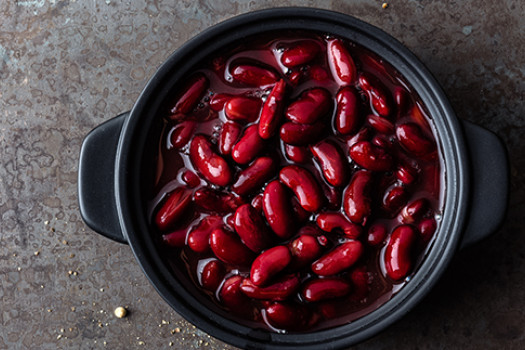
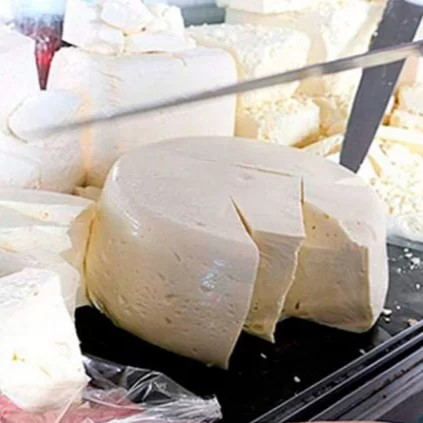
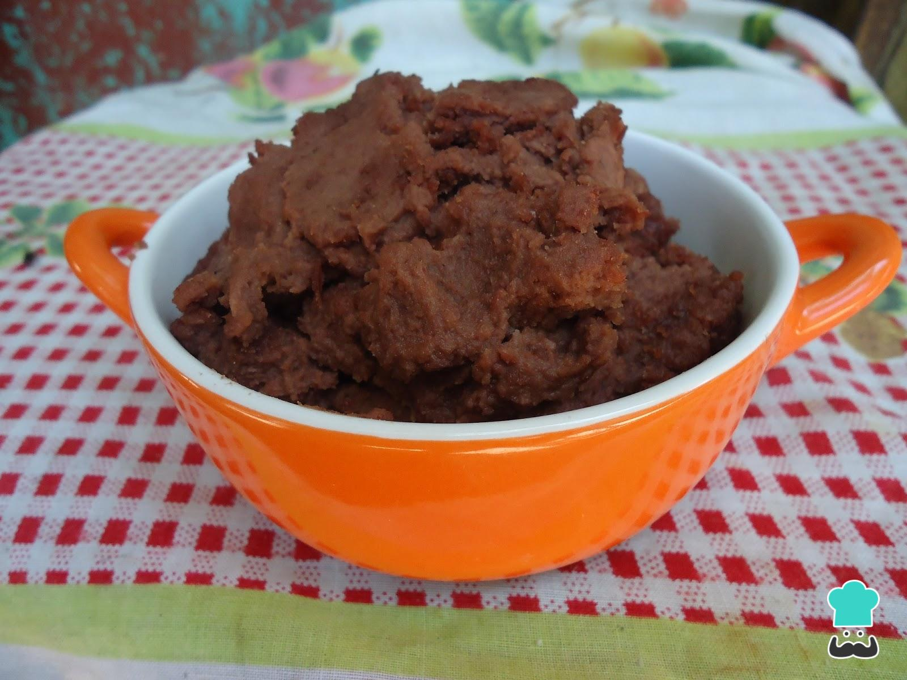

Los diferentes productos que ofrecemos
El producto principal de chimbaros son los frijoles cocidos, pero con el tiempo hemos ido añadiendo frijoles licuados y lácteos como queso seco, semi-seco, mantequilla, cuajada y quesillo.

Frijoles cocidos
Cada cocción inicia con la escogida y lavada de los frijoles. Para cocerlos solamente les agregamos, sal, culantro fino y culantro ancho.

Lácteos
Directo desde Olancho los tenemos disponibles en presentación de media libra de queso seco, semi-seco, quesillo, mantequilla y cuajada.

Frijoles licuados
La cocción es igual que nuestros frjoles enteros, a la hora de licuarlos agregamos más culantro fino.
Información